Pilvipalvelimen vuokraus ja asennus
- Valitse esim. DigitalOcean, Kamatera tai Vultr joista vuokrata VPS.
- Luo uusi käyttäjätili ja lisää luottokortti varmistaaksesi ettet ole botti.
- Valitse virtuaalipalvelimen käyttöjärjestelmä ynnä muu.
- Hanki domain-nimi esimerkiksi NameCheapistä.
Palvelin suojaan palomuurilla
- Ota ssh:lla yhteys virtuaalipalvelimeen.
- Asenna ufw komennolla sudo apt-get install ufw
- Tee palomuuriin reikä komennolla sudo ufw allow 22/tcp
- Laita palomuuri päälle komennolla sudo ufw enable
Kotisivut palvelimelle
- Asenna apache komennolla sudo apt-get install apache2
- Testaa onko apache käynnissä komennolla sudo systemctl status apache2
- Tee reikä palomuuriin komennolla sudo ufw allow 80/tcp
Korvaa defaulttisivu komennolla echo Hello world! |sudo tee /var/www/html/index.html
Palvelimen ohjelmien päivitys
- sudo apt-get update
- sudo apt-get upgrade
- sudo apt-get dist-upgrade
Tehtävä:
Aluksi vuokrasin VPS:n DigitalOceanista.
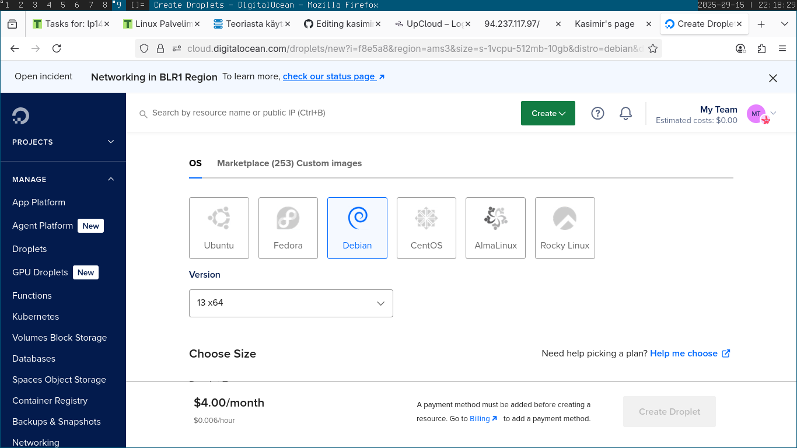Minulla oli hieman haasteita SSH-avaimen kanssa mutta sain sen lopulta toimimaan.
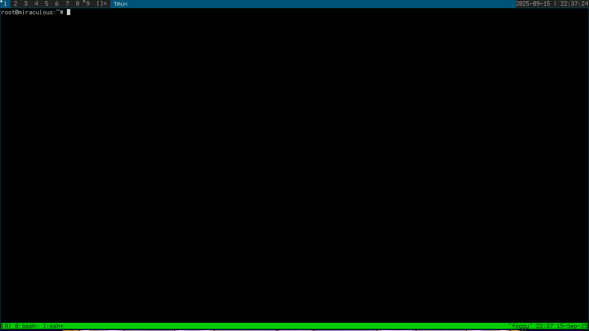Asensin ufw -palomuurin, tein muuriin reiän ja laitoin palomuurin päälle:
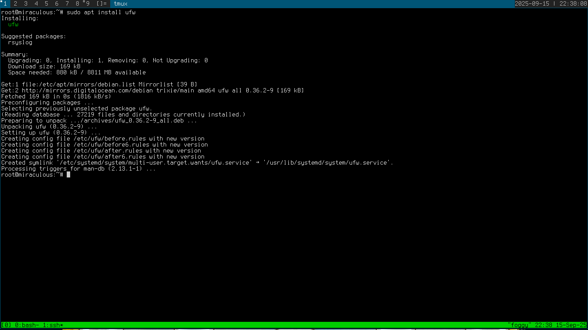 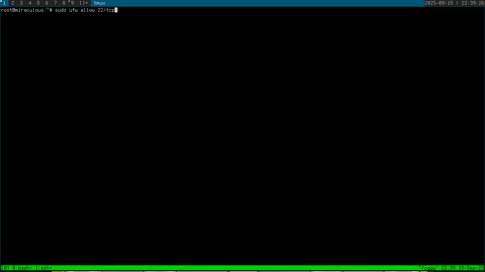 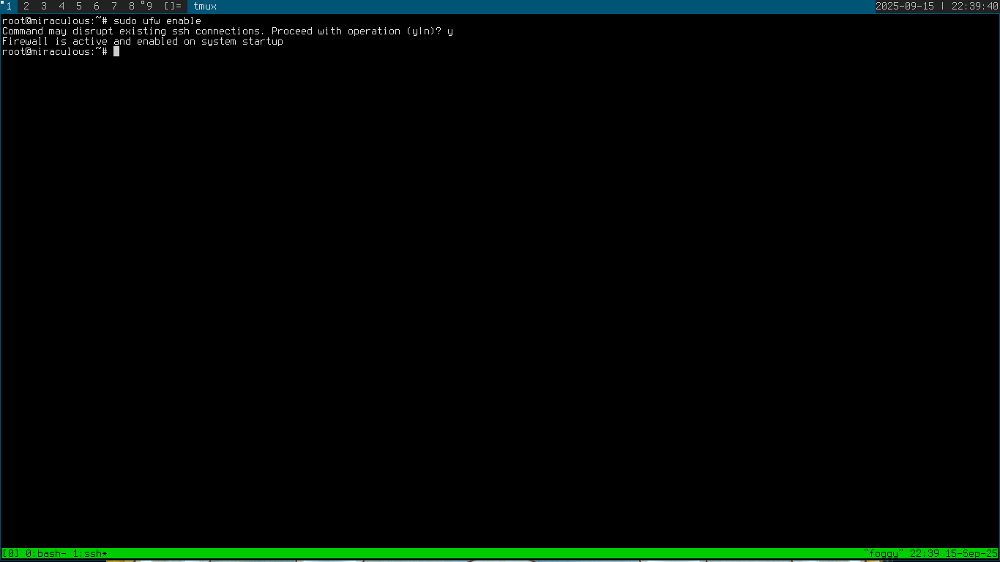Loin uuden käyttäjän komennolla sudo adduser kasimir ja lisäsin sen sudo-ryhmään
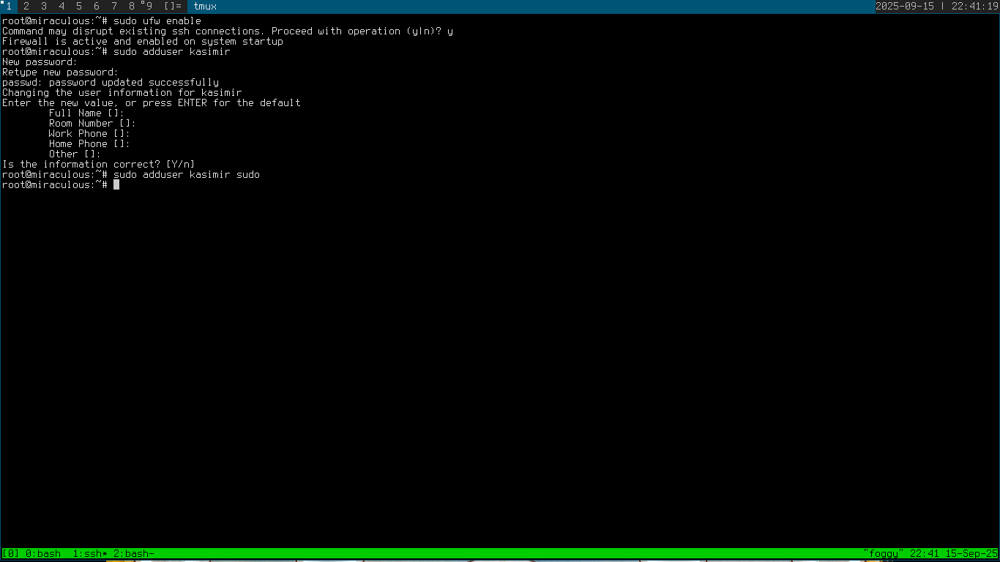Minulla oli hieman vaikeuksia saada taas ssh-avain toimimaan uudella käyttäjällä mutta lopulta sain sen toimimaan. Minun piti vain kopioida .ssh/authorized_keys root-käyttäjän tiedostoista uuden käyttäjän kotihakemistoon oikeilla oikeuksilla.
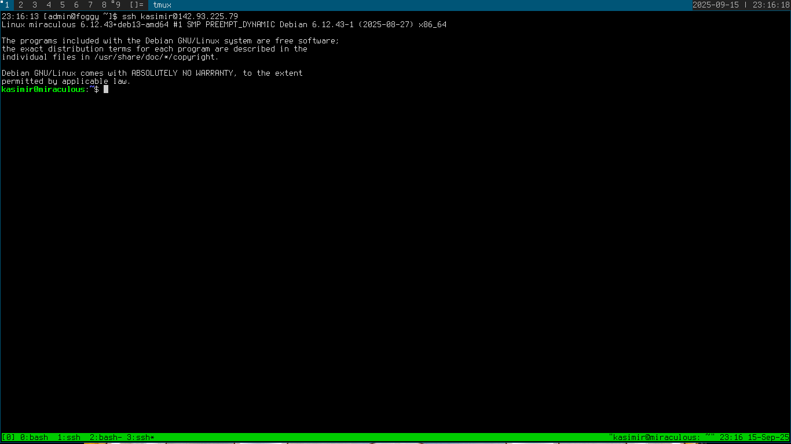Seuraavaksi laitoin rootin pois päältä muokkaamalla /etc/passwd -tiedostoa
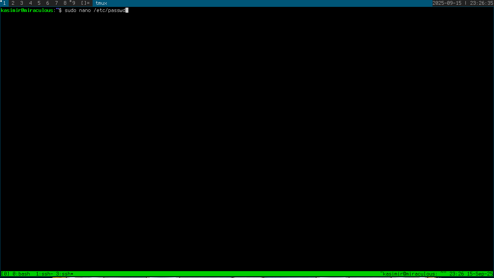 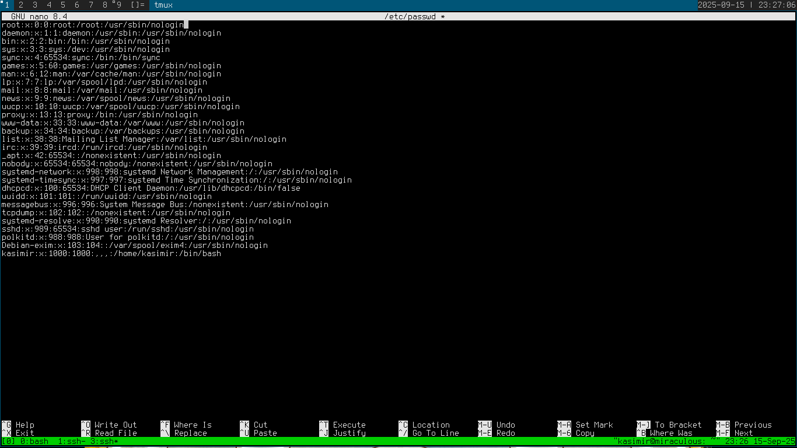Toimi!
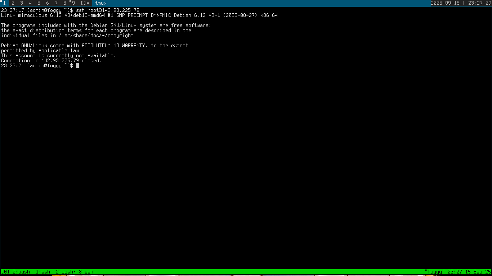Päivitin järjestelmän.
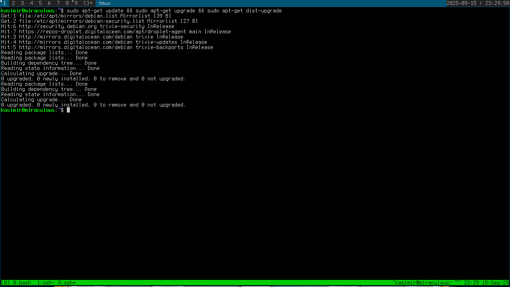Seuraavaksi asensin apache -serverin
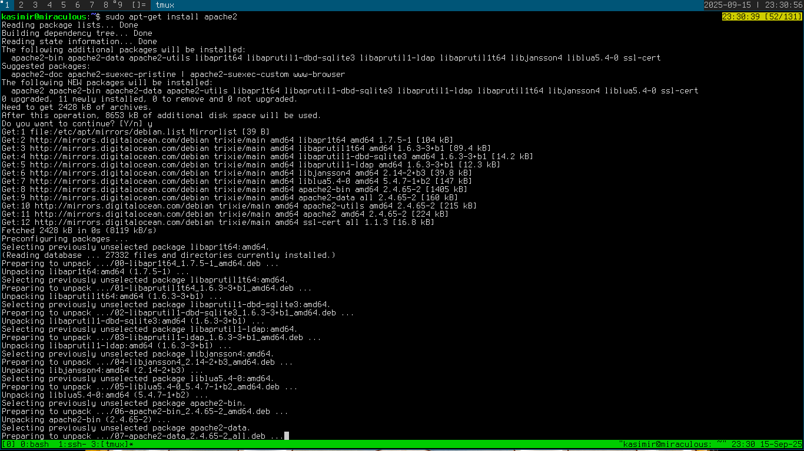Tarkastin että apache toimii
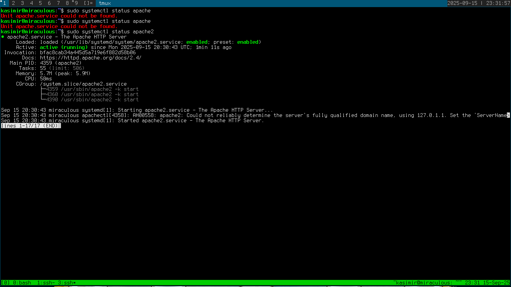Tein uuden reiän palomuuriin http-sivua varten
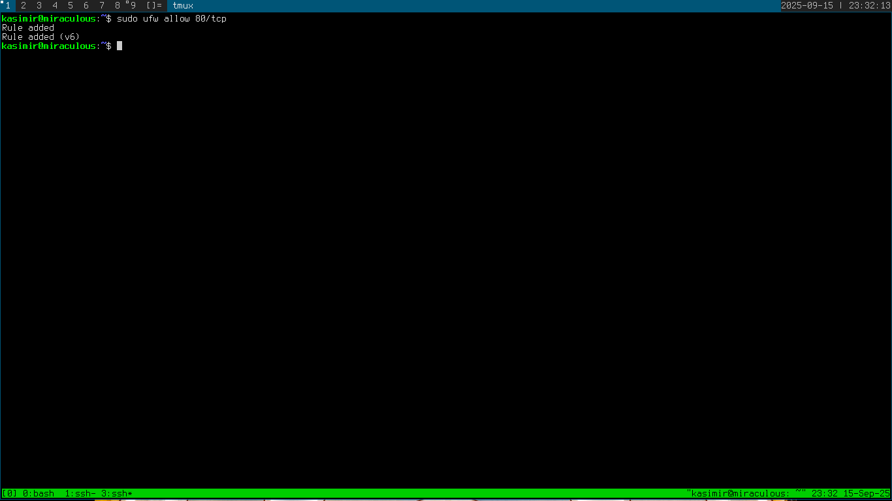Webbisivu toimi!
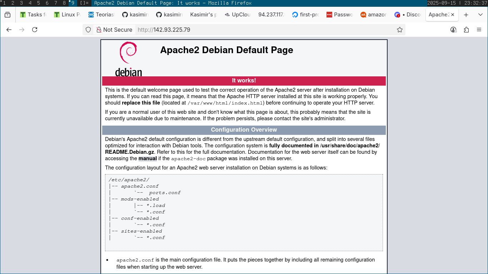Korvasin vielä apachen oletussivun omalla tekstinpätkälläni.
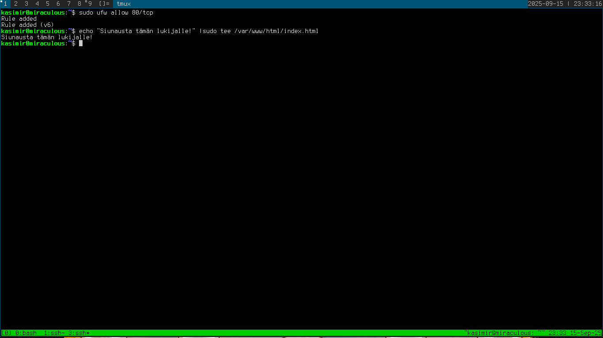 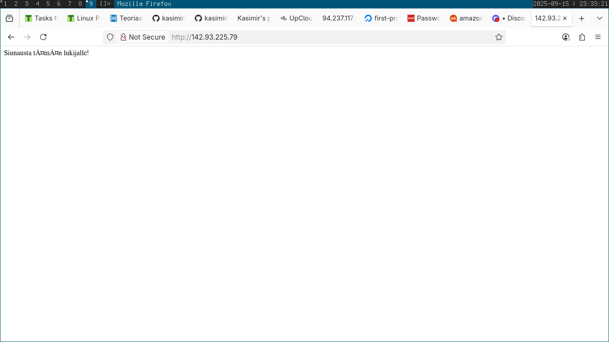Lähteet:
Karvinen, Tero 2025 Tehtävänanto h4 https://terokarvinen.com/linux-palvelimet/
Lehto, Susanna 2022 Teoriasta käytäntöön pilvipalvelimen avulla https://susannalehto.fi/2022/teoriasta-kaytantoon-pilvipalvelimen-avulla-h4/